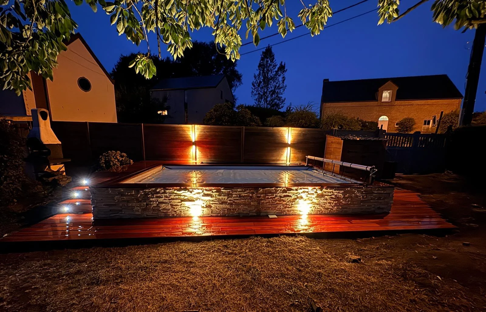
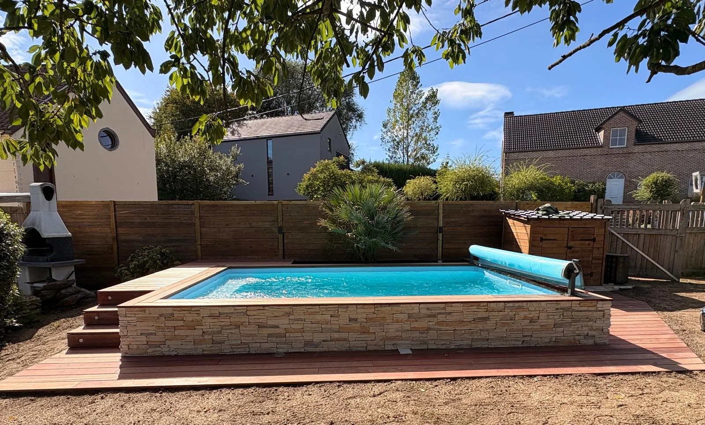
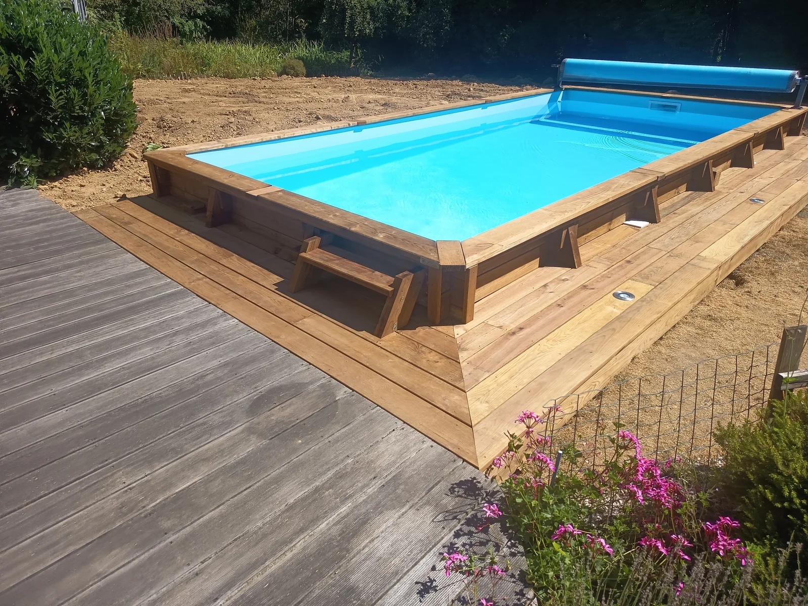

Réalisations LC Création
La lumière
change tout.
Une piscine, sa terrasse et les détails qui prolongent les soirées.

La même réalisation, de jour
Un projet.
Deux atmosphères.
Le bois, la pierre et la lumière donnent un caractère à l’ensemble. La piscine et ses abords sont conçus pour être vécus à chaque moment de la journée.

Le soin du détail
De l’eau à la terrasse.
L’entrée dans l’eau
Une terrasse pour vivre dehors
Photographies de plusieurs réalisations LC Création.
La transformation
Du terrain
au lieu de vie.
La préparation, la structure et les finitions donnent forme au résultat. Retrouvez aussi les étapes du chantier en images.
Voir les 7 étapes de réalisation

Déplacez le curseur pour comparer les deux vues. Les photographies ont été prises depuis des points de vue différents.
Le retour de nos clients
La confiance se construit
chantier après chantier.
Retrouvez les avis publiés sur notre fiche Google.
Consulter les avis GoogleLC Création · Grez-Doiceau et Brabant wallon
Votre jardin pourrait être le prochain projet.
Montrez-nous votre terrain, les accès et l’aménagement que vous avez en tête.